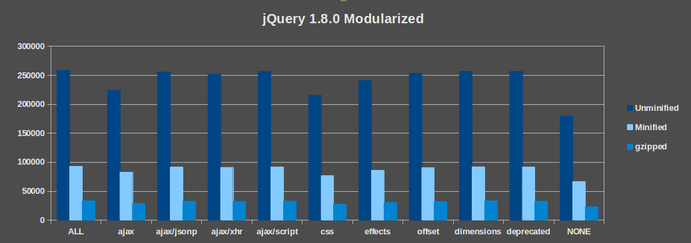
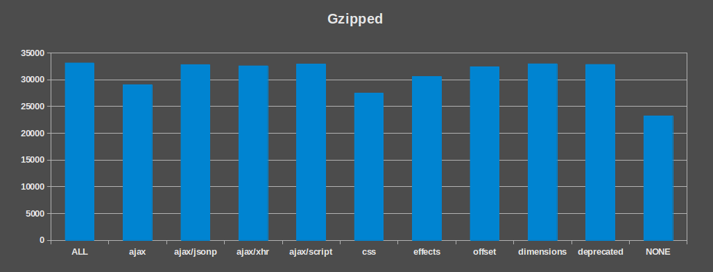

FRESH!
Home-Made jQuery
Building jQuery 1.8.0 based on your needs

New in jQuery 1.8.0
- Sizzle re-written
- Animations re-written
- Automatic CSS prefixing
- Extended $(html, props)
- Modularity
...plus more! See Dave Methvin's blog post, "jQuery 1.8 Released" for all the deets: http://blog.jquery.com/2012/08/09/jquery-1-8-released/
Live demo
the part where Mike struggles with OSX
Dependencies
-
ajax
- ajax/jsonp
- ajax/xhr
- ajax/script
-
css
- effects
- offset
- dimensions
- deprecated
Lets get down to brass tacks.

